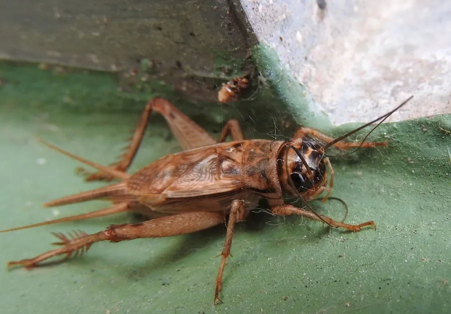

昆虫 · 动物界
家蟋蟀 Acheta domesticus

常见于人类居所附近的蟋蟀，雄虫夜间鸣声清脆，常被饲养作宠物、斗虫或饲料昆虫，原产西南亚，适应性极强。
- 分类
- 门节肢动物门纲昆虫纲目直翅目科蟋蟀科属家蟋蟀属
- 栖息环境
- 温暖潮湿的屋内、仓库、垃圾堆与田野，多在夜间活动
- 地理分布
- 原产西南亚，现随人类活动扩散至世界各地
- 保护级别
- 暂无评估
物种志
家蟋蟀成虫体长约 1.6–2 cm，体黄褐色，头部有深色纵纹，前翅平覆于背部；雄虫前翅有发音镜，靠摩擦鸣叫，雌虫尾部有长针状产卵管。后足腿节粗壮，善于跳跃，触角细长。
家蟋蟀夜行性，杂食，取食谷物、植物残渣和有机碎屑，常出现在温暖的屋内、仓库和垃圾堆附近。雄虫夜间鸣叫吸引雌虫，鸣声频率随温度升高而加快；雌虫把卵产在潮湿土壤中，若虫蜕皮数次，约 2–3 个月发育为成虫。它原产西南亚，随人类活动扩散到全球，是饲养爬行动物、鸟类的主要饲料昆虫之一，也被开发为食用昆虫，欧盟已批准其作为新型食品原料；室内偶尔出现通常无害。
形态与习性
- 食性杂食，取食谷物、植物残渣与有机碎屑
- 体长约 1.6–2 cm
- 寿命成虫约 1–3 个月，若虫期约 2 个月
- 繁殖雌虫用产卵管把卵产在潮湿土壤中
- 鸣叫雄虫夜间鸣叫求偶，频率随温度变化
- 利用常见饲料昆虫，也被开发为食用昆虫
趣味知识
- 蟋蟀鸣声频率与温度相关，天越热叫得越快。
- 家蟋蟀已被欧盟批准作为新型食品原料。
- 雌蟋蟀尾部的针状结构是产卵管，不是毒刺。